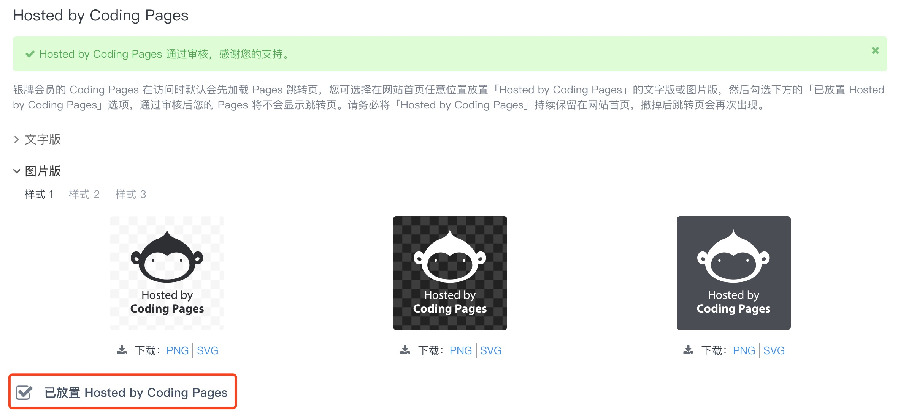
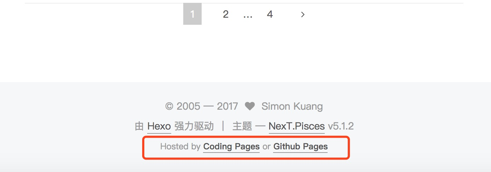
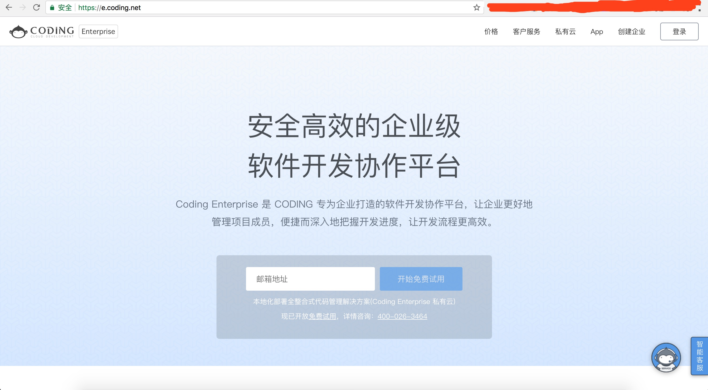

为了打个广告，coding pages 变得好邪恶
Coding Pages 是我的博客承载平台。我的博客是用 Hexo 做的，Markdown 语法书写，编译成静态 html 后上传到 Coding Pages 和 Github Pages 上面去，供大家访问。之所以用两个不同的 Pages 服务，是因为之前 Github 被 GFW 墙了，包括 Pages 在内的服务都访问不顺畅，彼时正好 gitcafe pages（后来被 Coding 收购）也提供 Pages 服务，所以在国内做了个镜像。这样墙里面的网友不仅不用看 GFW 的心情，还因为服务器在国内，国内网友访问时更快一些。谷歌上一搜『hexo github coding』就能有很多结果，例如这篇『将hexo博客同时托管到github和coding』。
但是好像从上个月（八月）开始，coding pages 开始劫持我的博客访问，穿插进他们自己的企业版 coding 的广告，播放五秒之后，再跳转进入我的博客。这很优酷、很爱奇艺，很 APP。广告页面上甚至连一个倒计时的控件都看不到，就右上角（好像是）一行很小的字，跟你讲：*你没访问错，这个页面只是广告*。
看了 coding 的解释，你要不花钱买它的会员（金牌会员），就要在你的博客页脚上加『hosted by coding pages』的字样。如下图。

大家注意截屏上方的绿色警示框：这是我的 pages 通过审核之后的状态。下面标红的复选框需要你在添加脚标之后自行选中，之后就会有专人给你审核开通免广告插入。
我猜测这是 coding 为了给自己网站做 SEO 的小伎俩。考虑到用了 coding 免费服务有一年多两年，人家要求也不过分，虽然网上很多人吵着要离开 coding 转 github，我还是决定给人加一个脚标。做人要懂感恩嘛。

这之后，痛快了几天。
真的只有几天。
然后，coding pages 抽风了。表现症状是，我输入域名访问我的博客，它不显示我的博客，甚至不显示广告，义无反顾跳转到他们家企业版的首页。我的博客看不了了。如下图。

不知道 coding 家到底有多想要做 SEO、做 PR。人家 OSChina 比你们家的 PR 还低，人家也没想 SEO 想到这个份儿上。
自此，我毅然决然，跟 coding 划清界限。
暂时的解决方案是，用 OSChina Pages 顶上，国内用户走码云，国外用户还是走 Github Pages。希望码云靠谱点，别让大家失望。码云之后也有备选方案，例如：七牛、BAE，没验证过，也不希望到那一步。
UPDATED (2017-09-05):
码云的 Pages 原来不支持自定义域名。我设置了 cname 试，结果是 403。用码云的话，我只能用 oschina.io 的二级域名：http://simonkuang.oschina.io/。这很不好。
So，先放弃吧，全解析到 Github Pages 上面去。懒得再折腾啦。
UPDATED 2 (2017-09-05):
coding 万分邪恶的地方：把我的博客强制跳转到企业版首页时，使用了 301 跳转，还特么不带 cache 相关的控制参数。从效果上来讲，按照 crhome 现行策略，客户端的缓存，从服务器端，是无论如何也清除不掉了。stackoverflow 最佳答案最后给的办法行不通（Chrome 60），已经试过。唯一可行的办法是客户端自己清除所有缓存。这不科学。
说简单点，coding 这是劫持了我的域名给自己网站导流，做得还挺绝，都不给自己留道歉的机会（因为服务器端根本没法儿补救）。心里有句 MMP，不知当讲不当讲。
真心不会再跟 coding 打交道。都别劝我，擦！